Hand off with accounts — how it would work (mock-up)
Drawn on the real app (the demo week). Three schedulers — Rune, Hex and Saber — each sign in as themselves (the sign-in stands for the defence mail sign-in). Tuesday has never been published. Everything new is drawn in; nothing is built yet.
The top bar — "View as" is gone
It shows who is signed in, as their callsign and role. Everything that records who did something — the change list, Edit history, the hand over — names that callsign.
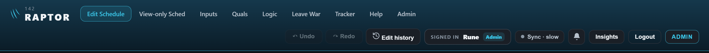
1 · Rune signs in and opens Tuesday
His last hand over was at 14:05. Since then Hex changed three things (handed over 16:00) and Saber one (handed over 16:30). So "4 new" — new to Rune — and the list groups them by person, every line naming who changed it and when. The line under the heading shows the last hand over (Saber, 16:30) and his own (14:05).
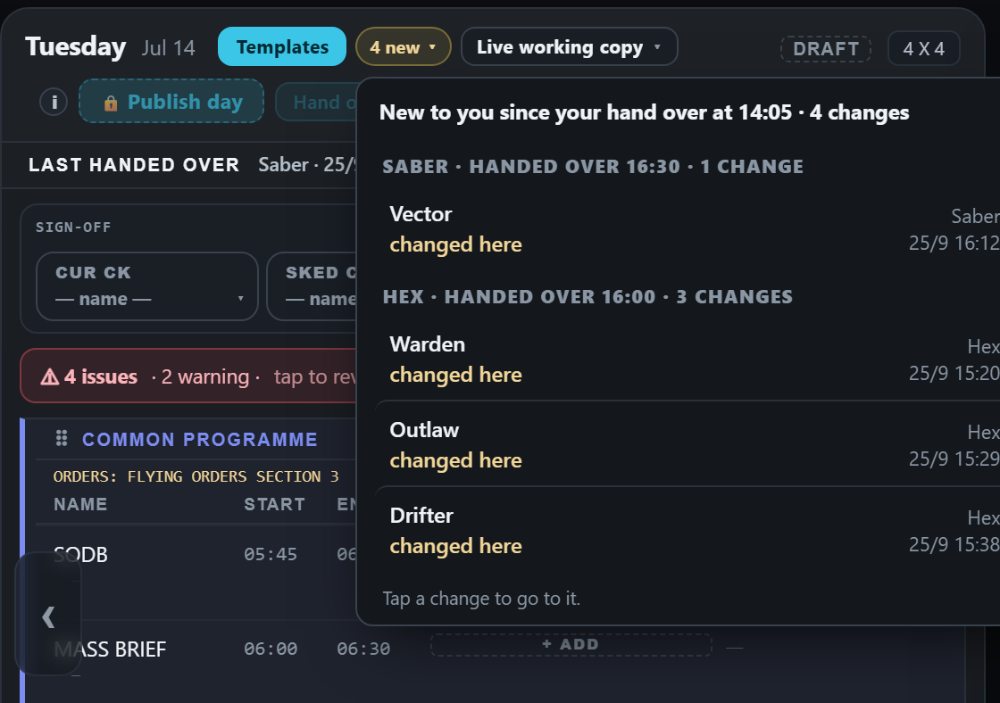
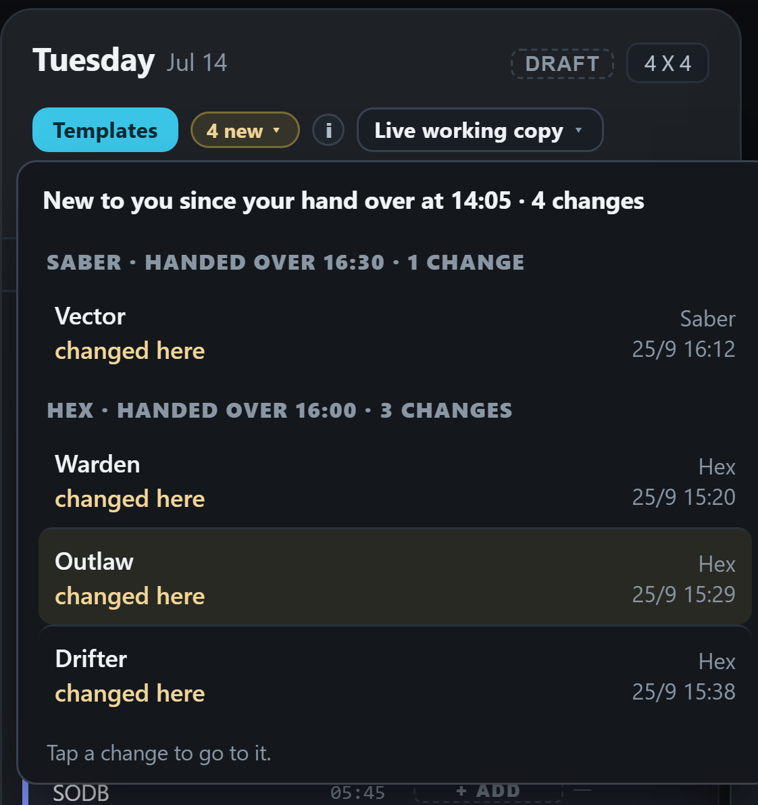
2 · Hex signs in — he sees only what is new to HIM
Hex handed over at 16:00, so only Saber's one change since then is new to him: "1 new". Same day, different view — each person sees what changed since they handed over. No "Since" menu to pick from.
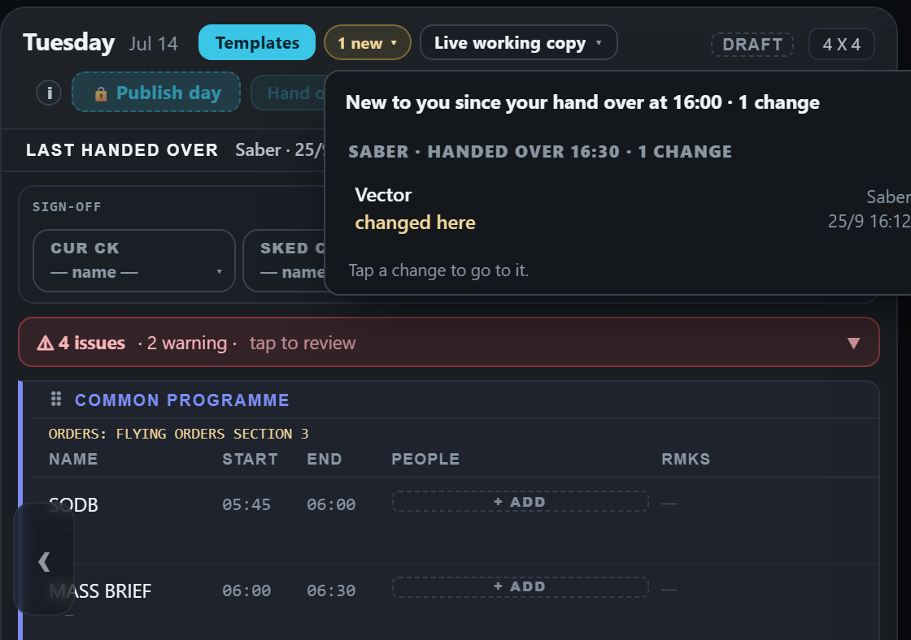
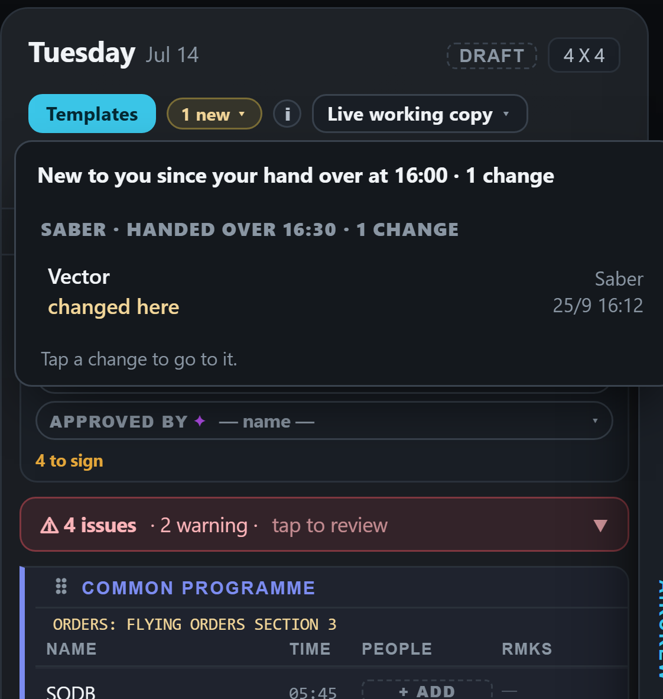
3 · Rune changes two things himself
"4 new · 2 yours": his own two sit at the top under "Yours · not handed over yet", the others' below. The Hand over button is live because he has something to hand over.
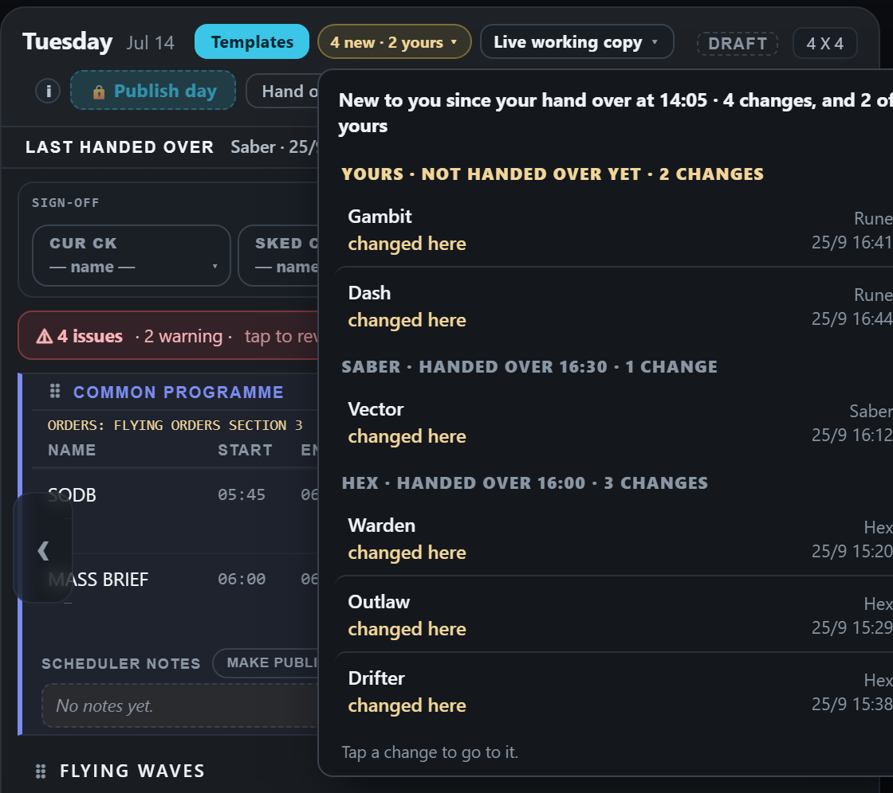
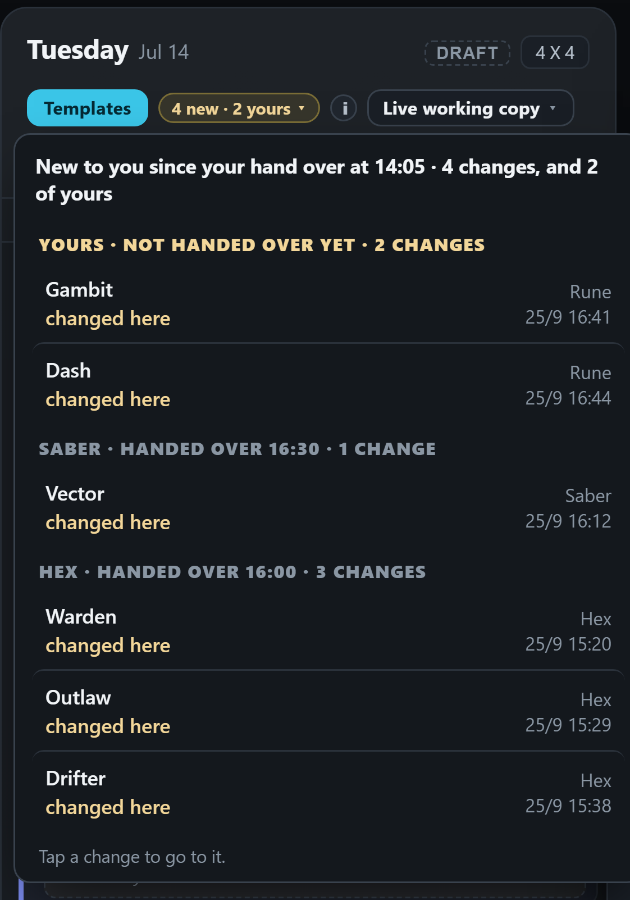
4 · Rune presses Hand over
Nothing is new to him now, so the count and the tags go. The line reads "Last handed over · Rune · 16:45". Hand over greys out until he changes something again.
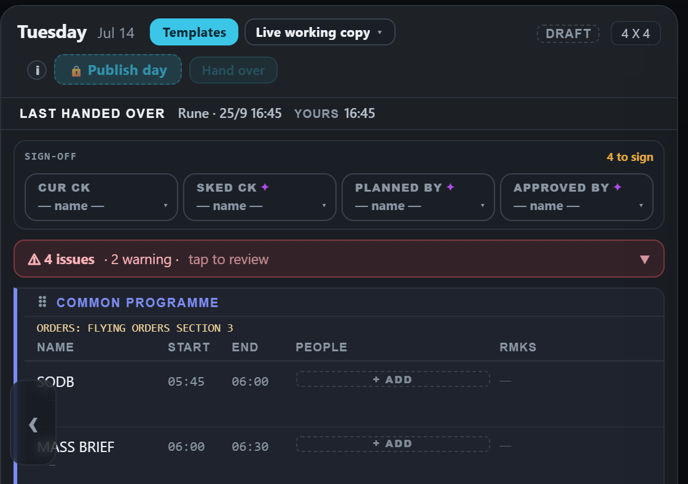
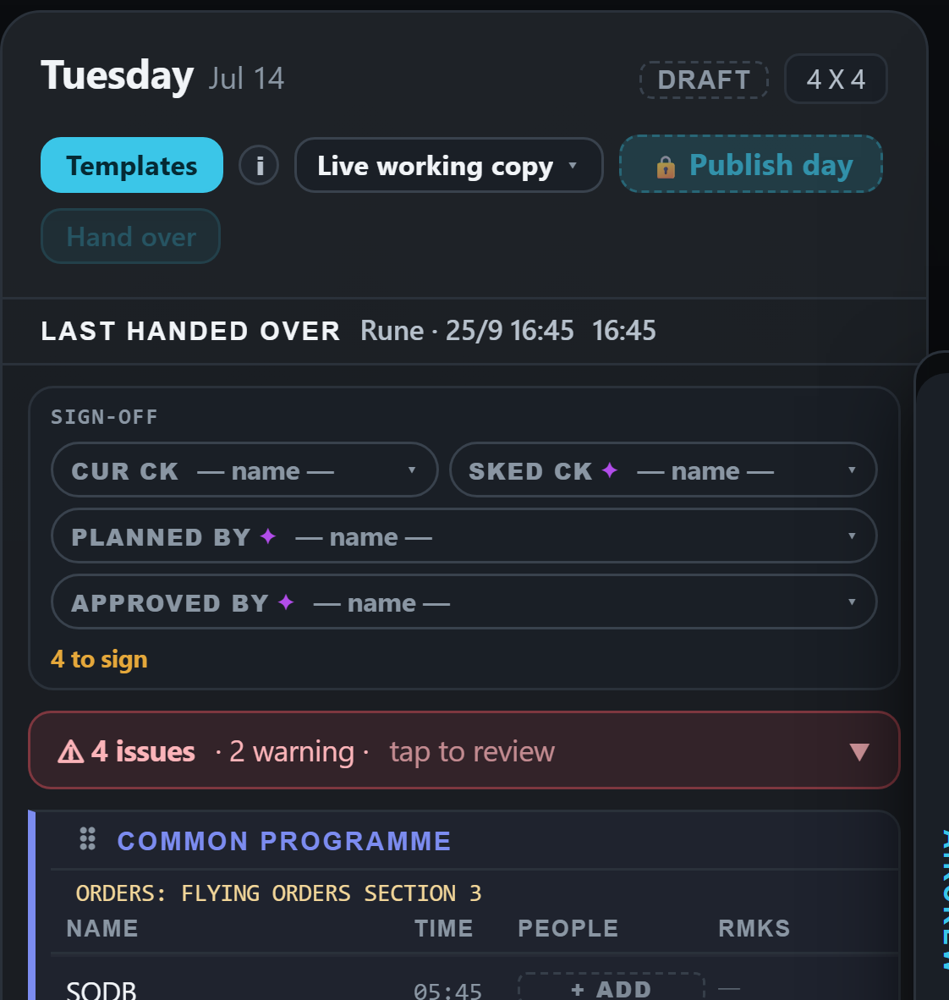
5 · Hex signs in again
Everything since HIS last hand over (16:00): Rune's two (handed over 16:45) and Saber's one (16:30) — "3 new".
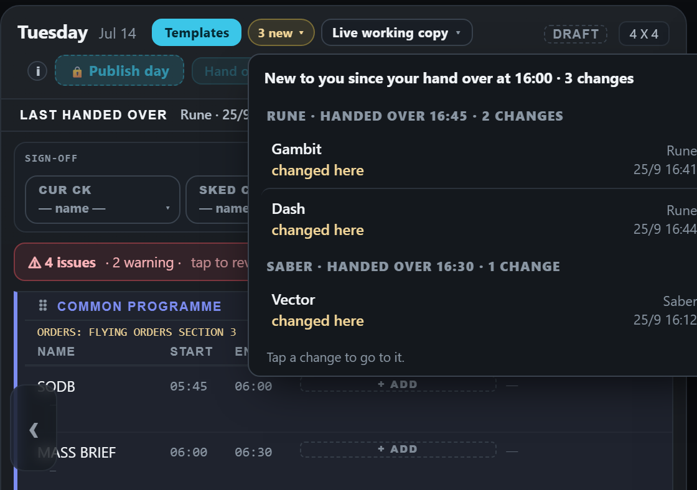
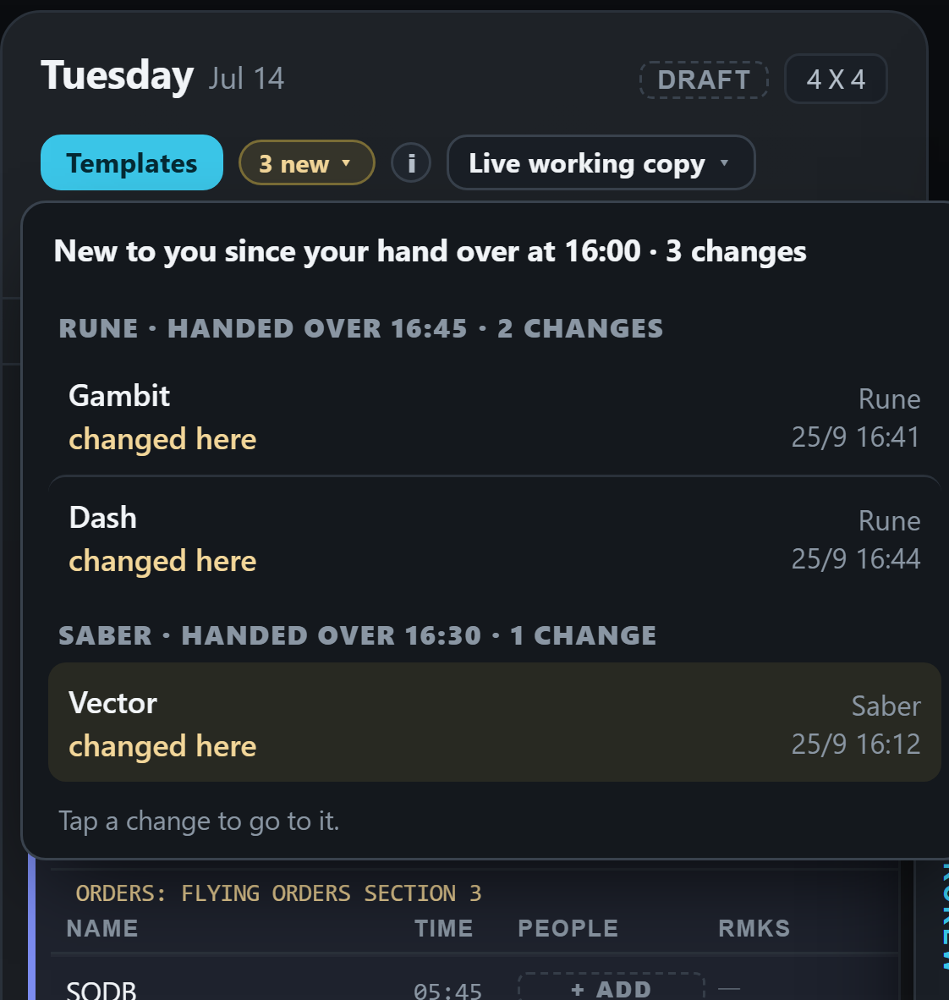
The rule, in one line: each person sees what changed since their own last hand over, grouped by who did it; their own unhanded changes sit on top; Hand over marks their point. A scheduler who has never handed over this day sees what changed since the last hand over by anyone.